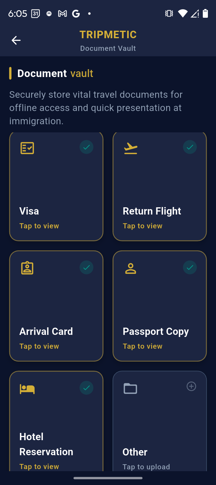
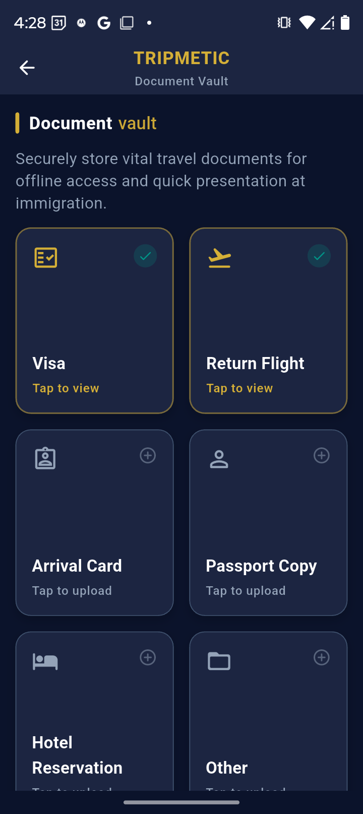
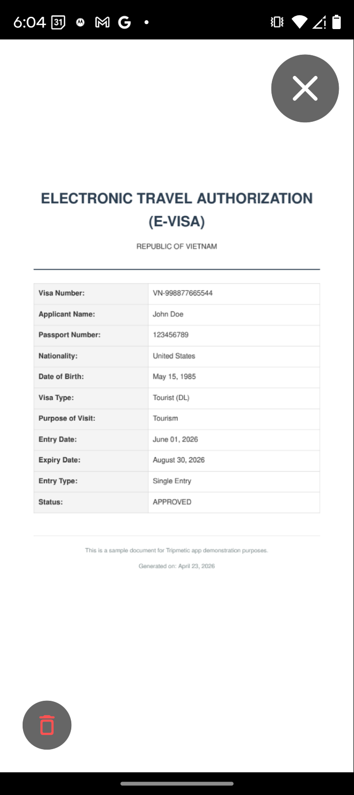
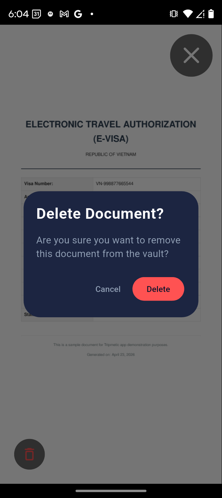

The immigration desk is a high-stress, zero-connectivity environment. Fumbling through your camera roll or waiting for an email inbox to load while an officer requests your onward ticket is a massive friction point.
The Tripmetic Document Vault is an enterprise-grade local storage module. It organizes your critical travel paperwork into a structured grid and utilizes a frictionless Presentation Mode, allowing you to confidently hand your device to border control agents. Here is how to prepare your vault.
1 Navigate the Vault Grid
Open the Tripmetic app and tap into the Documents tab. You will be greeted by a responsive grid specifically mapped to the six most common border control requirements: Visa, Return Flight, Arrival Card, Passport Copy, Hotel Reservation, and an Other slot for custom requirements like vaccination records.

2 Cache Your Files Offline
Tap on any empty category tile (e.g., "Return Flight"). The app will launch your phone's native file picker. Select the required PDF, JPG, or PNG. The moment you select the file, Tripmetic copies it directly into its secure, offline-resilient local storage. Visual indicators on the grid will confirm the document is loaded.

3 Utilize Presentation Mode
When the immigration officer asks for your hotel reservation, simply tap the loaded "Hotel Reservation" tile. Tripmetic will instantly launch Presentation Mode. This isolates your document in a full-screen, pinch-to-zoom interface, stripping away the rest of the app's UI so the officer can focus solely on your paperwork.

4 Seamless Navigation
Presentation Mode features a massive, highly visible "Close" button. Once the officer verifies your hotel, they can easily tap to close the document, returning instantly to the main vault grid to request your Return Flight. This workflow eliminates the need to swipe between different apps or menus.

Frequently Asked Questions
No. The Document Vault is precision-engineered for absolute privacy. Your passports, visas, and reservations are never uploaded to a remote server. They are strictly copied to the native local storage sandboxed within your device.
No. Because the files are cached locally during the upload process in Step 2, they are permanently available, even if your phone is in Airplane Mode or you lack cellular service in the immigration hall.
The vault supports standard, high-fidelity formats including standard PDFs (perfect for flight itineraries and official e-Visas) as well as JPG and PNG image files.